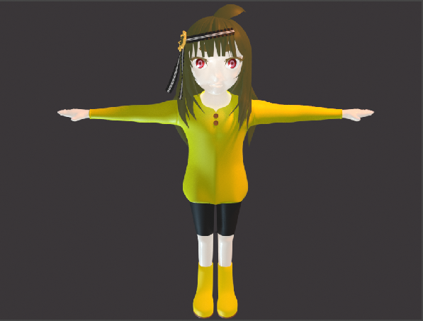
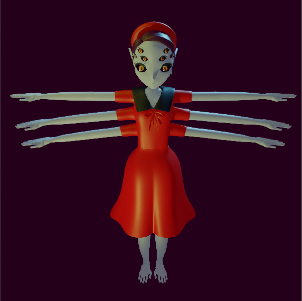
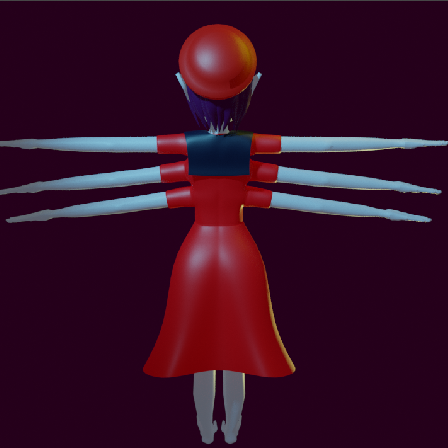

キャラクター紹介
シセキ キライ 前
シセキ キライ 横
シセキ キライ 構図
特徴
このキャラは歯石をモデルに作成しました。
体長は23mm程で、ぷにぷにしている。
そのため、夏祭りのスーパーボールすくいにボールと間違われ流されているのをよく確認している。
幼少期に祖父に抱かれた際、口臭がきつかったことがきっかけで歯磨きへの執着が芽生えた。
最近は自身の歯だけでは飽き足らず、
様々な動物の歯を寝ている隙に口内へ侵入し、頭にある角を使って歯石を取る。また、手に持つ歯磨き専用のスポンジで歯をつるつるにしてくれる。
父親の仕事の関係上、世界各地に飛び回っており、様々な地域で歯石除去活動を行っている。
これまで幾度となく飲み込まれそうになっているが、その都度歯と歯茎の間に穴を掘り身を隠してやり過ごしている。(これが後の歯周ポケットである)
将来は金融会社に勤めたいと思っているが、毎晩他人の歯を磨いているため、授業をまともに聞いたことがない。
ちなみに本人の歯はとうに磨きすぎが原因で無くなっている。
好きなモノ:甘いもの
嫌いなモノ:ガム
制作期間
このキャラは私がBlenderを学びながらはじめて作ったキャラクターです。
それ故、こんなシンプルな構造に対して90分ほどかかったと思います。
ここがポイント!!!!
歯石をどのように表現しようかとても悩みました。いろいろな歯石の画像を調べて構想を考えたのですが、気持ち悪くなるばかりで
とても自分の技術では表現できないと感じたので、それなら逆に歯石を取ってくれるキャラを作ればいいじゃなかと気づき、
デフォルトで用意されているマテリアルに各パーツを付け足して作リました。
特に角のマテリアルに光沢を表現できたときはとてもうれしかったことを覚えています。
頂点数8008、辺16028、面8054、三角形面15660
問題点
右も左も分からず、特にミラーのモディファイヤーが上手く結合せず、とても苦労しました。
解決方法
とにかく調べました。Blender自体とても有名なアプリであるため、ゆっくりと調べながら行えば簡単に情報が出てくるため、この辺はとても便利だなと感じました。
キャラクター紹介
ふぁとちゃん 前
ふぁとちゃん 後ろ
ふぁとちゃん 構図
特徴
このキャラは脂肪をモデルに作成しました。
体長は10mm~40mmのおしゃべりが大好きで誰とでも仲良くなれる脂肪の塊。
極度の寂しがり屋ですぐ人にくっつく。本人たちに悪気がなく一生懸命話しかけているが人との会話に成功したことは一度も無い。
しかし、つままれる度にカマってもらえているのだと勘違いしており、本人たちはとてもうれしそうに喜んでいる。
そのため、燃焼される際は自分の話がつまらなかったのだと思い、ごめんねと泣きながら消えてゆくとてもよい子。
触感はもちもちぷにぷにでガソリンの匂いがしている。キューと鳴きながら仲間を集めて大きくなり、存在感を出して
カマってもらおうとする為、やっかい極まりない。
現在役者の夢を見て、3つのアルバイトを掛け持ちしているが第一希望の飲食店では体臭が原因で全て出禁になっている。
好きなモノ:生物
嫌いなモノ:特茶
制作期間
このキャラは私がBlenderを学びながら2番目に作ったキャラクターです。
1作目である程度操作のコツを掴んでいたため、半分遊び感覚で作りました。
時間で言えば30分ほどだったと思います。
ここがポイント!!!!
一目で脂肪だと分かるようにどっぷりとした形にしたかったため、スカルプモードで粘土をこねくり回す感覚で作成しました。
特徴がほしかったため、目を他のキャラとは違う模様にしてみました。
頂点数17942、辺35600、面17664、三角形面35200
問題点
流体的かつ、モチモチ感を出す為にどう表現すれば良いのかそれなりに悩みました。
解決方法
スカルプモードを用いて1つのマテリアルにパーツをくっつけるのでは無く、1つのマテリアルから粘土をこねくり回す感覚で作成しました。
キャラクター紹介
むだげ衆 前
むだげ衆 後ろ
むだげ衆 構図
特徴
このキャラは名前の通りムダ毛をモデルに作成しました。
生息地域(身体の部位)によって習慣が異なり、独自の文化が確認されている。
集団での行動が多く、特に害も無く、人に比べて双子で生まれることが多く、家族愛がとても強いことで有名である。
太さ、長さ、性格は寄生する人によって異なるといわれており、毎年様々な研究が学会で行われているが、まだまだ未知の部分が多い種である。
唯一分かっていることでは、地味に根深いこと。自由奔放な性格をしており、各々がバイトなりしているが遅刻の常習犯として有名であること。
の2点だけである。
最近の研究では待機児童問題に対して興味を示すことが新たに発見された。
好きなモノ:のりたま
嫌いなモノ:うんちく野郎
制作期間
3番目のキャラクターです。
パスの機能を知るために作ったキャラです。15分ほどで完成したと思います。
ここがポイント!!!!
ムダ毛自体特徴が無く個性を出すのに悩んだので、子供の頃は純粋だったことに対し、
大きく(大人に)なるほど疑り深くなり、だんだんとまぶたが厚くなるというコンセプトで作りました。
頂点数50446、辺89312、面50806、三角形面98980
問題点
作品自体がシンプルなためどう見せるかで本気で悩みました。
解決方法
もっと良い方法があったかもしれませんが考えるのがバカらしくなりました。
キャラクター紹介
ブーガァ 前

ブーガァ 後ろ
ブーガァ構図
特徴
このキャラは鼻くそをモデルに作成しました。
糞くそ3兄弟の末っ子で一番の問題児である。
体長は135mm程で母親からくすねた頭のブローチに、自身の抜け毛を丸めて発行させ鼻くそを作る。それを他人の鼻孔内に貼り付けるいたずらが大好きなクソガキである。
とにかくじっとすることができず、物怖じしない性格で一度気になったことに対しては、納得できるまで執拗に質問したり、逆に興味の無いことに対してはとことんやらないと、
ある意味表と裏がはっきりしているタイプである。
運動神経がよく100mを11秒で走り抜けたりするが、本人はそのすごさを何一つ理解していない。
バカにされることを嫌うが、
鶴の恩返しを本気で信じている程度にはバカである。
兄の「ルーム」と「ワックス」とはいつも喧嘩しているが、仲はそこまで悪くない。
好きなモノ:いたずら、ぷりん
嫌いなモノ:散髪
制作期間
初めての人型モデルです。
今までのキャラクターと比べて格段に難し方です。
毎日3時間作業をし、約3週間ほど掛けて作成しました。
ここがポイント!!!!
こだわりとしては頭のブローチや目のハイライト、衣服のボタンです。
目のハイライトに関しては光の有無によって消えたりするようにしており、表情の幅が広げれたと感じています。
また、ブローチやボタンなどの小道具を作ったりするのはとても楽しかったです。
鼻くそらしさを表現するために、全体的に丸をイメージして作成しました。
頂点数8675、辺16724、面8125、三角形面16394

ライトあり

ライトなし
問題点
衣服のミラーが上手く適応されなかった。
関節部分がきれいにモデリングができず、かなり苦労した。
解決方法
ミラーが上手く適応されなかったため、ボタンを作成してごまかした。
YouTube等の動画解説を参考に作成をおこなった。
キャラクター紹介
Caries 前
Caries 横
Caries 構図
特徴
このキャラは虫歯菌をモデルに作成しました。
人の歯を溶かして集めることを趣味としており、日々糖分を求めて彷徨っている。
一般的に有名なのは、自身と相手が互いに帽子の交換を行うことで婚約が成立すると言われている。
プロポーズを断るときは紫、婚約を破棄する際はオレンジの部分を自身の身体から引き千切り、相手の帽子にリボンとしてくっつけ返却を行う。
目に見える白い物体はなぜか生えることが無かった親知らずが元になっている。また、なんの目的があって歯を集めているのか分かっていない
とても温厚な性格だが、腹は虫歯のごとく真っ黒で叱られるとすぐに泣くが大体嘘泣きである。
好きなモノ:わたあめ
嫌いなモノ:モンダミン
制作期間
モデリングに物理演算を取り込む基礎を学ぶことを目的に作成。
衣類などの小道具、帽子、リボン等のモデリング技術も必要だと感じたため、作成したキャラ。
2時間半ほどで作成しました。
ここがポイント!!!!
アニメーション可能
帽子、リボン等の小道具にも物理演算のclothを適用させているため、よりリアルに動かすことが可能。
また、カメラの画角変更、ぼかしの導入を使って少し幽霊っぽく演出できたと思っている。
頂点数57997、辺115582、面57594、三角刑面115188
問題点
このキャラの構想についてかなり悩みました。特に色についてはなかなかしっくりくるものが無かったです。
解決方法
虫歯ということから子供→甘い物→キャンディと着想を得てこの色合いに決定した。
幽霊にした理由は虫歯菌でGoogle検索した際に表示された画像を見た瞬間思いつきました。
キャラクター紹介
アプリス・クネ 前
アプリス・クネ 後ろ
アプリス・クネ 構図
特徴
このキャラだけは特別で今まで得た技術を全て用いてキャラクターをモデリングしてみようと思い作成しました。
コンセプトとしてできるだけ独創的なキャラを作ろうとしました。
モデルは蜘蛛として作成しました。
アラネア族特有の脚は無く、手が8本。医学に対する探究心が非常に高いく、3人同時手術の成功者としても有名。
一般的な男性アラネアの体長は6～13ｍあり、診察の対価として家畜の牛を飲んだりする。それに対し、
アプリスは体長は4ｍ程で部族の中では小柄で、かつ子山羊を一呑みする程度であり、温厚な性格で面倒見が良く、孤児院の診察などの慈善活動をしていることからかなりの人から慕われている。
また、アラネア族では一人前となる条件に自身の糸で服を作る決まりがあり、裁縫技術の高い種族としても有名であり、
アラネアの糸の服を着れば病に伏せることは無いと言われている。
好きなモノ:手術
嫌いなモノ:国税
制作期間
人型のモデリングが2回目ということもあり、毎日2時間半作業をし、約3週間ほど掛けて作成しました。
ここがポイント!!!!
独創的かつモデルに合うように腕の位置や目のサイズをこだわった。
蜘蛛ということもあり、脚は無く全て腕でできています。
頂点数7022、辺13817、面6845、三角刑面13654
問題点
蜘蛛をモデルとしたため目と腕が一般的なモデルより多くなってしまったことにより、ポリゴン数が多くなってしまった。
解決方法
そのため、頭の装飾を単純な帽子に変えたり、服装をスカートに替えることによって頂点数の削減にあたった。